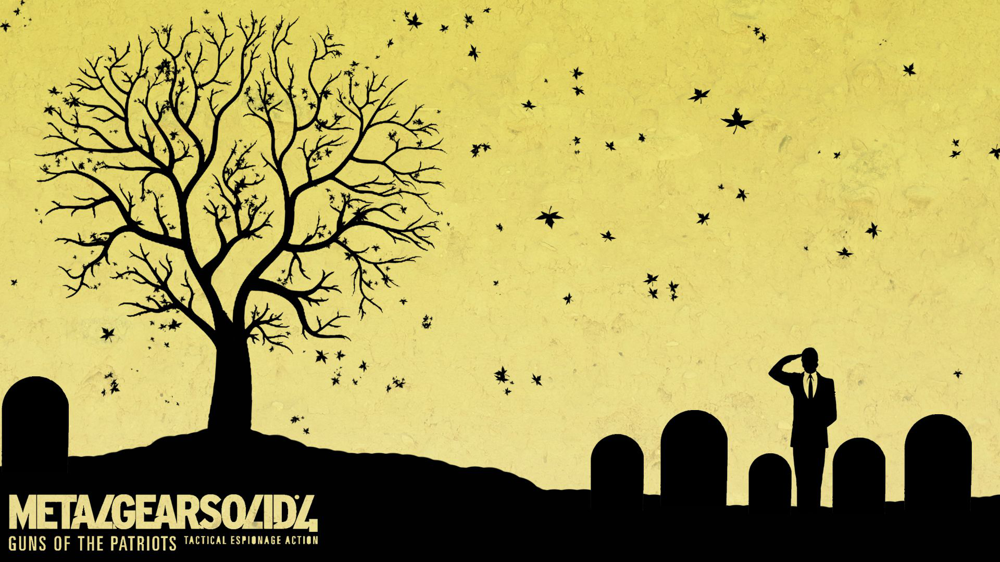

Завершающая часть серии Metal Gear Solid, которая ставит точку на истории Solid Snake'a.
Это последний круг ада, который Вам придется преодолеть, дабы запустить данную игру....
Изначально MGS4 доступен только для PS3 и больше нигде. Поэтому снова придется обратиться к RPCS3, но тут будут свои проблемы. Игра имеет тот же статус "ingame", а это значит, что она может крашится, фризить и тд и тп. MGS4 очень долгое время не поддавался рукам эмуляторщиков (сейчас тоже плохо поддается), но энтузиасты каким-то образом уже запустили данную игру в 4k60fps. По личному опыту MGS4 дальше меню не запустился.
Оптимальный вариант - купить/арендовать/взять на время PS3 и купить диск за 500 рублей. Вариант самый надежный, но будьте готовы к 20 FPS.
Экспериментальный вариант - пытаться запустить на эмуляторе PS3. Возможно Вам придется потратить час или два для настройки под вашу систему и поиска подходящей версии игры.
Для игры на ПК Вам потребуется: